懂得品味生活又講究格調，積極工作也追求盡情玩樂，跟著小資漫遊獨特奇幻西湖行。 道地美食Ｘ時尚精品Ｘ潮流購物Ｘ質感表演Ｘ精緻住宿，私房行程就要這樣玩！
-
杭州JW萬豪酒店
尊榮尊爵的高品味，極佳的地理佔位，比鄰武林廣場、西湖文化廣場、購物商圈，窗外則是城市風光，部分客房更可遠眺西湖美景... [more]
{出發囉} 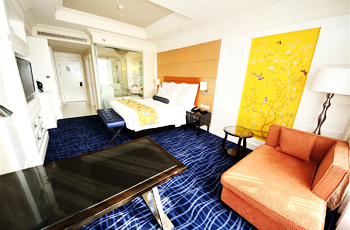 -
武林路 中國時尚女裝第一街
武林路匯集特色小店，大多是設計師自己設計、製作、出售的創意款式，因此風格呈現十分多元、前衛、充滿創意，正以米蘭為目標，期許躋身國際時尚都會之列... [more]
{變身時尚女郎} 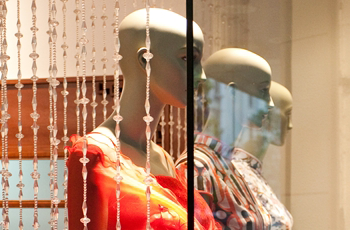 -
湖濱國際名品街 頂級商圈
擁有舉世聞名的西湖美景，整條湖濱路更被打造成領導嶄新時尚消費的現代都市頂級商業圈，與國際時尚同步。全杭州最時尚、最精品、最VIP的服務近在於此... [more]
{購物去} 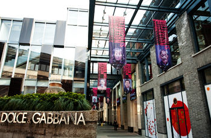 -
外婆家 外婆喊你吃飯嘍!
有家叫外婆家的餐廳，有點像星巴客的藝術文青風，又有點像酒吧或美式餐廳的氛圍，屬於複和式裝潢，各種風格都有。復古高貴典雅的包廂區，桌巾紙還印著外婆家的故事與歷史... [more]
{逛累了…覓食去} 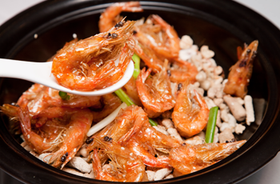 -
西湖天地 杭州版新天地
融合古今的新時尚，成為杭州地區熱門的餐飲、休閒勝地，集結了世界知名的咖啡館、會所、餐廳、娛樂場所和商店，將現代時尚元素巧妙融會於一爐... [more]
{朝休閒區逛逛吧！} 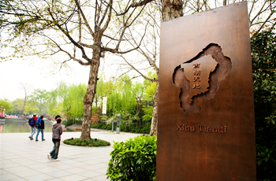 -
雷峰塔
杭州西湖十景之一，因「白蛇傳」傳說而聲名遠揚，2002年隨著雷峰新塔完工，已經消失70餘年的雷峰夕照美景，終於重回人間天堂─杭州... [more]
{順路看看西湖十景之一} 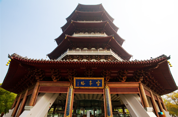 -
印象西湖 大師張藝謀之作
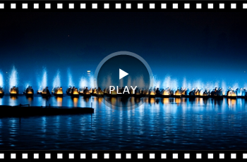
簡單生活、寧靜清新、獨樹一格，喜愛安靜閒適，樂於追求自我，想跟上文青的腳步嗎？ 美食主義Ｘ創意小物Ｘ藝術氣息Ｘ悠靜美景Ｘ風格旅店，不跟不潮的異緻行程，來吧！
-
柳湖小築青年旅舍 背包客嚴選
開了窗就能見到西湖美景，出了門左轉走幾步路便到湖畔，右轉則是滿載人文藝術的特色小店，絕佳的地理優勢，一派歐風閒情，成為年輕遊客旅宿杭州的首選... [more]
{文青之旅啟程} 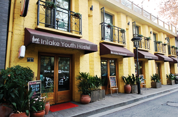 -
玉玲瓏餐廳 美術館．餐廳傻傻分不清？
裝潢設計充滿浪漫歐洲情調，從餐廳外觀到內部擺設，宮廷式沙發座椅、紋飾細膩的骨瓷杯盤、藝術感十足的掛畫吊燈，每一個細節都令人有種踏進美術館的錯覺... [more]
{享盡口眼福，是該起身散步了！} 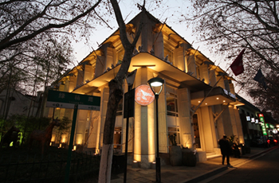 -
南山路藝術休閒特色街區 頂級商圈
深厚的藝術文化根底， 作為特色街，休閒娛樂功能也不能少，有人說「夜晚的西湖是屬於酒吧的，而酒吧是屬於南山路的」，為夜晚的西湖岸添魅惑之美... [more]
{藝術氛圍延續中} 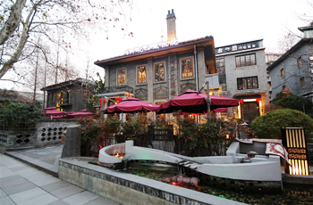 -
清河坊歷史文化特色街區 夜遊好去處
河坊街一帶，吃、喝、玩、樂一應俱全，當地美食小吃外，也引進新類型商家店舖，不論是復古字畫、民俗文物，甚至到近代傘具、紀念商品店舖等應有盡有... [more]
{傳統購物趣} 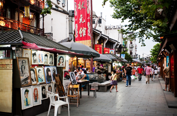 -
胡慶餘堂藥膳 神奇的科學殿堂
-
斷橋白堤 西湖三堤之一
西湖三堤之一，因為較蘇堤、楊公堤為短，所以非常適合漫步遊覽。白堤東起「斷橋殘雪」，止於「平湖秋月」，是將杭州市區與孤山風景區連接起來的紐帶... [more]
{白堤是漫步、拍照首選} 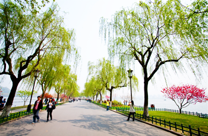